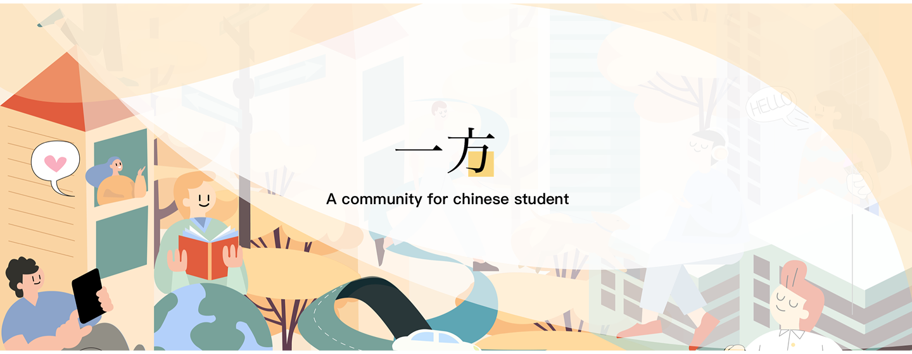
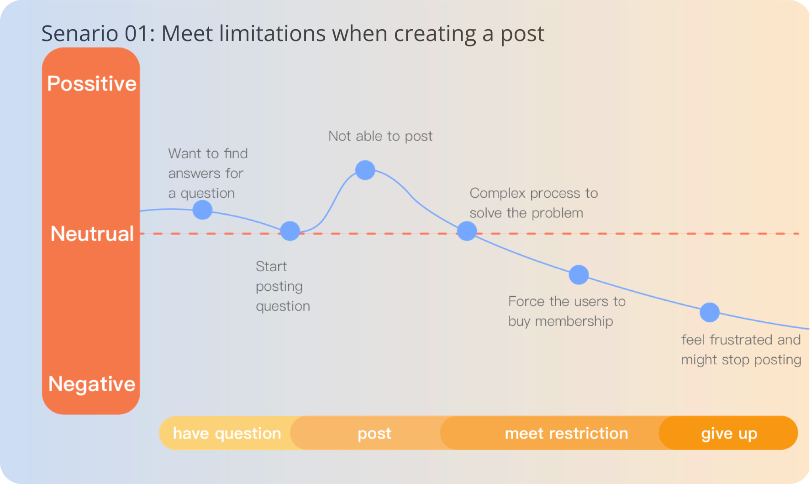
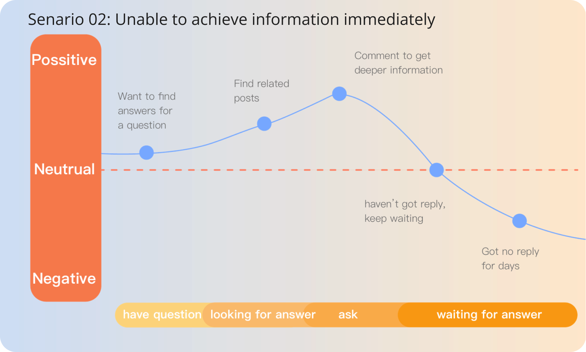
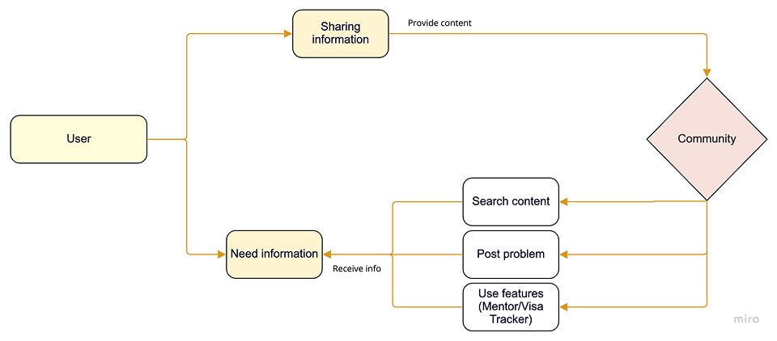
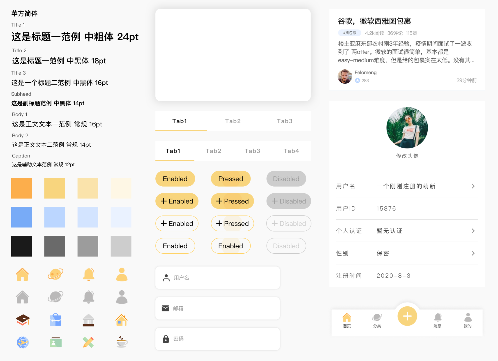
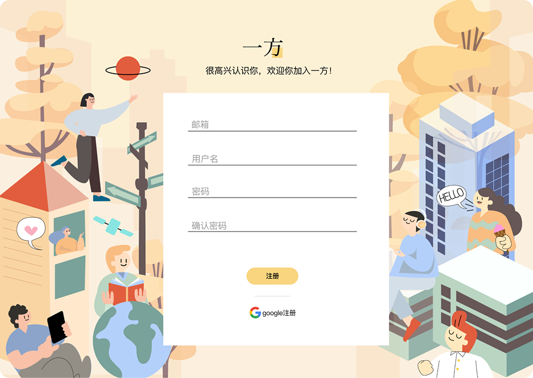
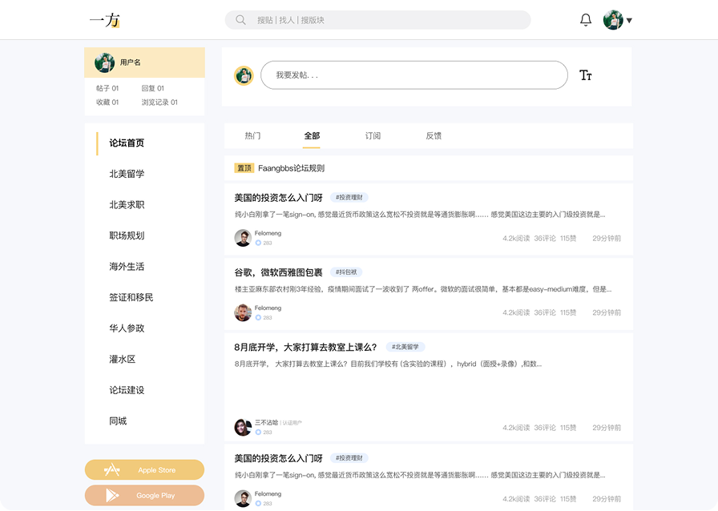
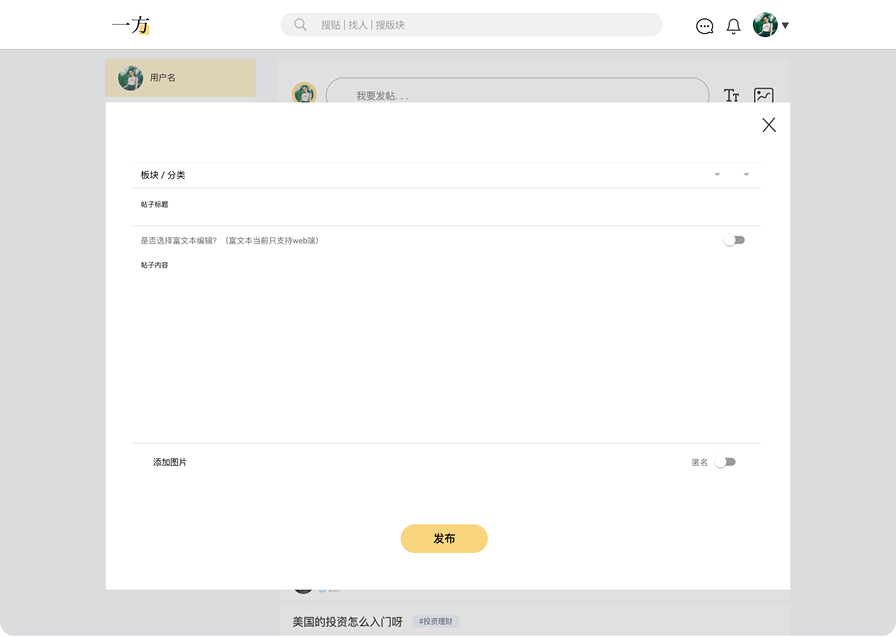
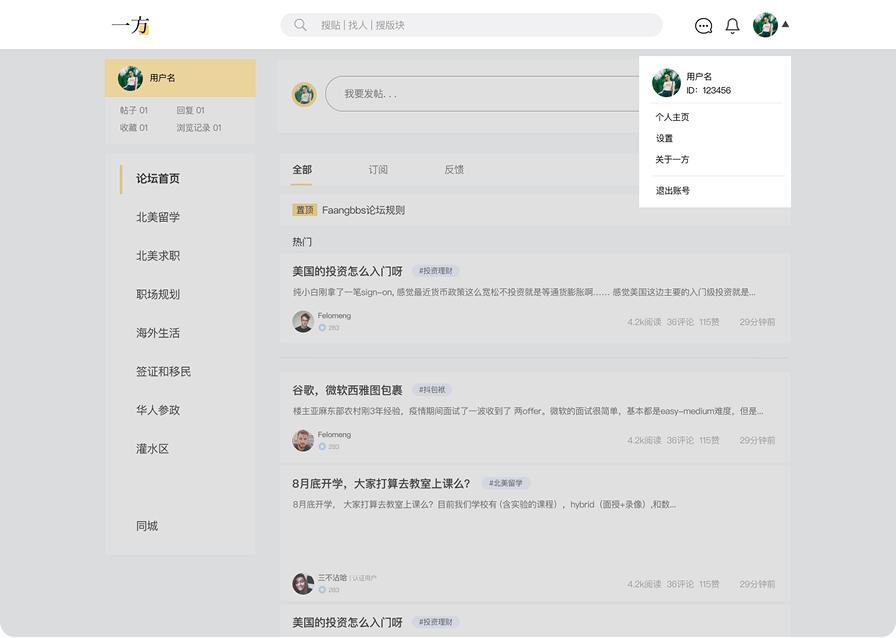
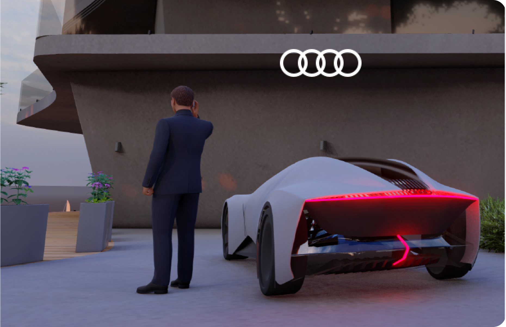

This product is designed to establish a vibrant, large-scale communication community specifically tailored for the Chinese diaspora residing in the United States, fostering a space for sharing personal narratives and exchanging critical information about lifestyle and cultural experiences. We deliver this comprehensive platform through both mobile application and web products to ensure maximum accessibility for our target users. Throughout the design process, our strategic focus remains twofold: prioritizing the direct needs and behaviors of the user base while strictly adhering to the platform's initial target positioning to ensure that our content strategy remains focused and relevant.
2021/04 - 2022/01
Social media
Responsive web | Mobile APP
UX/UI designer
Provide intuitive opportunities for users to easily communicate and efficiently browse information within the community.
 Deliver a simplified user experience by reducing complexity and ensuring streamlined, simplified steps for all core interactions.
Deliver a simplified user experience by reducing complexity and ensuring streamlined, simplified steps for all core interactions.
 Implement a minimal visual aesthetic that supports the content and brand without distracting the user, ensuring the focus remains squarely on community narratives and shared information.
Implement a minimal visual aesthetic that supports the content and brand without distracting the user, ensuring the focus remains squarely on community narratives and shared information.
How do we design and launch a comprehensive, large-scale communication platform that effectively connects Chinese residents in the United States, enabling them to easily share stories and access critical information about lifestyle and experience while maintaining a clear target positioning and a focused content strategy?
Through dedicated user research, we gained a deeper, more comprehensive understanding of our target users' cross-cultural experiences, needs, and specific requirements, which was foundational for the product's development.

A User Journey Map was developed to gain deep insight into user actions, motivations, and pain points throughout their entire interaction lifecycle, which was critical in establishing the strategic direction for the product's main functions and essential features.



The visual design phase began with layout creation informed directly by our initial brainstorming sessions. We leveraged insights from prior research and analysis to refine the minute details of the community experience. Through rigorous testing of various layouts, font sizes, and color styles, we ultimately formalized the comprehensive design specifications for the product.

We prioritized a minimal visual aesthetic and optimized information hierarchy to ensure users focus entirely on the community's content and posts. Furthermore, recognizing that visa status and career trajectory are primary concerns for international students and professionals, we incorporated valuable utility features like a free career mentor and a Visa tracker to directly address these needs.

The decision to adopt a mobile-first design strategy was driven by the inherent behavior of users within a large-scale communication community. Given that social media interaction, content browsing, and quick communications are predominantly conducted on mobile devices, designing for the smallest screen first ensures maximum accessibility and ease of use. This approach allows us to deliver a fast, intuitive, and native-feeling experience that mirrors the simplicity and immediacy users expect from popular social media platforms, making it significantly easier to create posts, browse content, and communicate instantly, thereby maximizing daily engagement

While prioritizing the mobile experience for daily engagement, the website version was concurrently developed to address the critical need for advanced content creation. The desktop interface provides a superior environment for users creating longer, more complex posts, offering a more expansive view that facilitates easier editing, detailed review, and efficient uploading of larger media files (such as extensive text, high-resolution images, or videos).




